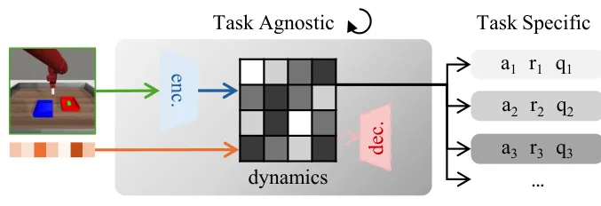
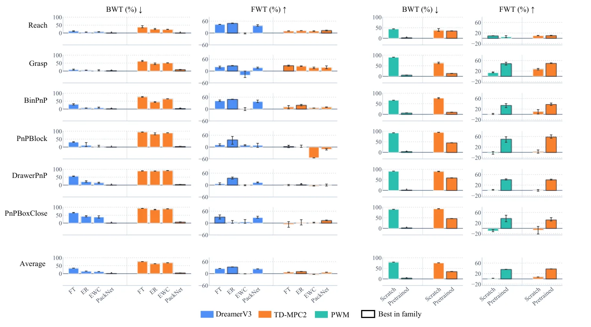
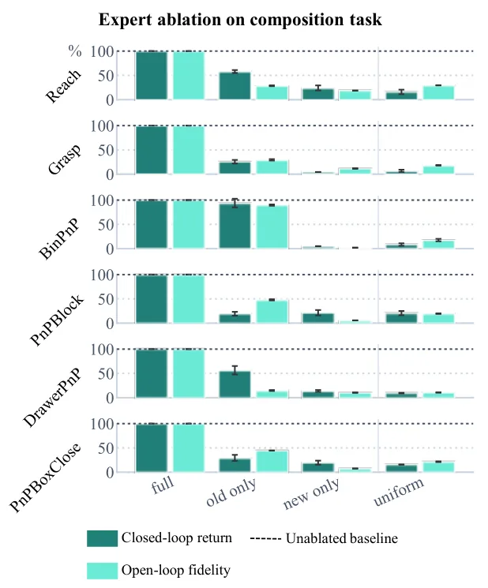

O problema: aprender rápido não é o mesmo que reutilizar conhecimento
Quando um agente de aprendizado por reforço enfrenta uma sequência de tarefas, ele precisa de duas coisas: aprender as novas interações rapidamente e não esquecer o que já domina. Modelos de mundo — redes que preveem como o ambiente evolui — são candidatos naturais para esse tipo de aprendizado contínuo, porque a dinâmica aprendida persiste entre tarefas. Mas há um problema: a velocidade com que um modelo se adapta a uma nova tarefa mistura duas habilidades distintas.
A primeira é a capacidade bruta de aprender interações inéditas. A segunda é a habilidade de reutilizar mecanismos que o modelo já conhece. Benchmarks existentes de aprendizado contínuo em manipulação robótica medem apenas a adaptação total, sem separar essas duas dimensões. Toda tarefa nova traz conteúdo inédito junto com objetos e ações que já apareceram antes, e fica impossível saber o quanto da performance vem de reuso e o quanto vem de aprendizado do zero.
O grupo de Haoyu Zhou, Joe Watson, Anson Lei e Ingmar Posner, do Applied Artificial Intelligence Lab da Universidade de Oxford, propõe um benchmark que isola a reutilização. A ideia central é simples: cada sequência de tarefas termina com uma tarefa composta, que recombina primitivas já vistas. Se o modelo realmente aprendeu mecanismos reutilizáveis, ele deveria resolver a composição com pouco esforço adicional. Se ele apenas memorizou cada tarefa isoladamente, a composição será tão difícil quanto uma tarefa completamente nova.

Três eixos de composição: ação, percepção e composição completa
O benchmark é dividido em três suites de tarefas, cada uma focando um tipo de composição. Na action-composition suite, as tarefas primitivas compartilham a mesma cena visual, mas envolvem ações diferentes sobre objetos distintos. A tarefa final combina essas ações em sequência. Na perception-composition suite, a ação permanece a mesma — por exemplo, empurrar um objeto — mas a aparência visual muda entre as primitivas. A tarefa composta exige que o modelo execute a ação em um contexto visual novo, mas estruturalmente similar.
A full-composition suite é a mais desafiadora: tanto a percepção quanto a ação mudam entre as primitivas, e a tarefa final recombina ambas. Essa estrutura permite identificar onde o reuso falha. Se um modelo vai bem na composição de ação mas mal na de percepção, isso sugere que ele reutiliza melhor políticas motoras do que representações visuais, ou vice-versa.
Cada suite contém seis tarefas: cinco primitivas e uma composta. O modelo é treinado nas primitivas em sequência, e então avaliado na tarefa composta sem treinamento adicional substancial. A métrica de forward transfer mede o desempenho na composição; a de backward transfer mede quanto o modelo esqueceu das primitivas anteriores. O ideal é alto forward transfer — reutilização eficiente — e backward transfer próximo de zero — sem esquecimento.
Separando o que deve ser contínuo do que pode ser reinicializado
Modelos de mundo têm uma estrutura interna que mistura componentes reutilizáveis e específicos de cada tarefa. O encoder transforma observações em representações latentes; o modelo de dinâmica prevê como o latente evolui dada uma ação; e as cabeças de saída — reward head, value head, policy head — produzem sinais para treinar o agente. A questão é: o que deve ser aprendido continuamente e o que pode ser reinicializado a cada tarefa?
Os autores propõem uma separação clara. O modelo de dinâmica — o backbone — é task-agnostic: ele captura como o mundo físico funciona, independentemente da recompensa ou objetivo específico. Esse componente deve ser treinado continuamente, acumulando conhecimento sobre mecanismos reutilizáveis. Já as cabeças de saída são task-specific: elas mapeiam o estado latente para sinais de recompensa ou valor que dependem do objetivo atual. Essas cabeças podem ser reinicializadas a cada nova tarefa sem perda, porque não carregam conhecimento transferível.
Essa separação permite aplicar métodos de aprendizado contínuo apenas ao backbone, onde o esquecimento realmente importa. Métodos como Experience Replay — que retreina periodicamente em amostras antigas — ou Elastic Weight Consolidation — que penaliza mudanças em pesos importantes para tarefas passadas — são aplicados só à dinâmica. As cabeças são retreinadas do zero, evitando que restrições de continual learning atrapalhem a adaptação rápida a novos objetivos.

Modelos avaliados: monolíticos e modulares
Os autores testam dois backbones monolíticos de ponta: DreamerV3 e TD-MPC2. Ambos são modelos de mundo que aprendem dinâmica latente e treinam políticas por model-based reinforcement learning. Sobre esses backbones, aplicam quatro métodos de aprendizado contínuo: Fine-tuning simples (sem proteção contra esquecimento), Experience Replay (ER), Elastic Weight Consolidation (EWC) e uma combinação de ambos (ER+EWC).
Além dos monolíticos, avaliam um modelo modular chamado Piecewise World Model (PWM). Em vez de uma única rede de dinâmica, o PWM usa uma mistura de experts: cada expert é uma rede pequena que captura um mecanismo específico, e um router aprende a combinar os experts conforme a situação. A ideia é que experts treinados em tarefas anteriores possam ser reutilizados diretamente na composição, sem retreinamento.
Todos os modelos são treinados online, interagindo com o ambiente em simulação. Cada tarefa recebe um orçamento fixo de passos de ambiente; ao final, o modelo é avaliado em closed-loop — executando a política aprendida — e em open-loop — prevendo trajetórias latentes sem executar ações. As métricas de forward transfer (FWT) e backward transfer (BWT) resumem reuso e esquecimento, respectivamente.
Resultados: nenhum método resolve reuso e esquecimento ao mesmo tempo
Os resultados mostram um trade-off claro. Fine-tuning puro atinge o maior forward transfer — o modelo se adapta rapidamente à composição — mas sofre backward transfer fortemente negativo: ele esquece as primitivas. Experience Replay inverte o cenário: backward transfer próximo de zero, mas forward transfer baixo. O modelo retém o que aprendeu, mas não reutiliza bem. EWC sozinho fica no meio-termo, com desempenho mediano em ambas as métricas. A combinação ER+EWC melhora ligeiramente, mas não resolve o problema.
O modelo modular PWM equilibra melhor as duas dimensões. Ele atinge backward transfer próximo de zero — quase sem esquecimento — e forward transfer comparável aos monolíticos com ER+EWC. Mas há um detalhe crucial: o encoder do PWM foi pré-treinado em demonstrações de todas as tarefas, incluindo a composição, e depois congelado. Isso significa que o modelo já tinha acesso a features visuais de todas as situações antes do treinamento contínuo começar.
Quando o encoder não é pré-treinado e deve ser aprendido online junto com a dinâmica, o PWM perde a vantagem. Seu desempenho cai ao nível dos monolíticos, sugerindo que a modularidade sozinha não basta: é preciso que o encoder forneça representações estáveis e suficientemente gerais desde o início. Sem isso, o router não consegue identificar quais experts reutilizar, e o modelo se comporta como um monolítico fragmentado.

A dificuldade aumenta de ação para percepção
A composição de ação é a mais fácil: todos os métodos atingem forward transfer razoável, e o esquecimento é moderado. Isso faz sentido: combinar ações diferentes sobre objetos visualmente similares é uma forma de generalização que modelos de mundo lidam relativamente bem, porque a estrutura visual permanece constante.
A composição de percepção é mais difícil. O forward transfer cai para todos os métodos, e o backward transfer piora. Aqui, o modelo precisa reconhecer que a mesma ação — empurrar, por exemplo — funciona em contextos visuais diferentes. Se o encoder não aprendeu features invariantes à aparência, o modelo trata cada contexto como uma tarefa completamente nova.
A composição completa é a mais desafiadora. Forward transfer cai ainda mais, e o esquecimento se acentua. Combinar mudanças de ação e percepção simultaneamente exige que o modelo tenha aprendido representações compositivas — features visuais reutilizáveis e políticas motoras modulares. Nenhum método avaliado consegue isso sem privilégios de pré-treinamento.
Ablação: experts antigos retêm desempenho substancial
Para entender o que o PWM realmente aprendeu, os autores fazem uma ablação na tarefa composta. Eles avaliam o modelo ativando apenas os experts treinados nas primitivas (prior experts), apenas os experts novos treinados na composição (new experts), ou todos uniformemente (uniform routing), comparando com o modelo completo que aprendeu o routing ideal.
Os resultados são reveladores. Ativando apenas os experts antigos, o modelo retém desempenho substancial na composição — tanto em closed-loop return quanto em fidelidade de predição open-loop. Isso confirma que os experts capturam mecanismos reutilizáveis: eles não foram treinados na composição, mas suas dinâmicas se aplicam a ela. Ativar apenas os experts novos ou todos uniformemente resulta em desempenho pior, sugerindo que o router aprendido realmente identifica quais experts são relevantes.

Limitações: simulação, orçamento fixo e encoders privilegiados
O benchmark tem limitações claras. Todos os experimentos são em simulação, porque model-based RL online exige entre 100 mil e 1 milhão de passos de ambiente por tarefa. Repetir isso em hardware real, para seis suites, múltiplos backbones, métodos e seeds, seria inviável. Além disso, o protocolo depende de recompensas densas, retornos normalizados por oráculos e resets automáticos — affordances de simulador que não existem no mundo real.
Os autores também não controlam o orçamento de parâmetros ou de computação entre os modelos. O PWM tem múltiplos experts, cada um pequeno, mas o número total de parâmetros não é igualado aos monolíticos. Isso dificulta saber se a vantagem do PWM vem da modularidade ou simplesmente de mais capacidade.
A limitação mais importante é o encoder pré-treinado. O PWM só supera os monolíticos quando o encoder já viu todas as tarefas, incluindo a composição, antes do treinamento contínuo. Isso é um privilégio forte: o modelo tem acesso a features visuais de situações futuras, algo que não aconteceria em um cenário realista de aprendizado contínuo. Sem esse privilégio, a modularidade não basta.
Os autores reconhecem essas limitações e apontam que portar o protocolo para hardware depende de backbones pré-treinados offline e detecção aprendida de sucesso, deixando isso para trabalho futuro. O benchmark, como está, é uma ferramenta de diagnóstico, não uma solução pronta.
O que fica em aberto: combinar experts e features gerais
Os resultados deixam claro que nenhum método atual resolve aprendizado contínuo composicional em modelos de mundo. Métodos convencionais trocam reuso por esquecimento ou vice-versa. Modularidade explícita melhora o equilíbrio, mas depende de encoders privilegiados. O caminho adiante, segundo os autores, passa por duas direções.
Primeira: aprender a combinar experts de forma mais eficiente. O router do PWM é treinado junto com os experts, mas talvez seja possível meta-aprender um router que identifique mecanismos reutilizáveis sem retreinamento. Ou usar atenção sobre experts, permitindo combinações mais flexíveis do que uma mistura ponderada.
Segunda: usar features visuais pré-treinadas em larga escala, como as do DINOv2, que já aparecem em trabalhos recentes como o DINO-WM. Essas features são treinadas em milhões de imagens naturais e capturam estrutura visual geral, independente de tarefas específicas. Um backbone totalmente task-agnostic — com encoder pré-treinado congelado e dinâmica modular — pode ser a chave para reutilizar sem esquecer.
O benchmark proposto não resolve o problema, mas o torna mensurável. Ele separa reuso de velocidade bruta de aprendizado, localiza onde o reuso falha ao longo de ação e percepção, e fornece um protocolo consistente para avaliar modelos de mundo em aprendizado contínuo. É uma ferramenta de diagnóstico, e os diagnósticos mostram que ainda há muito trabalho pela frente.
O que fica
- Benchmarks anteriores misturavam velocidade de aprendizado e reuso de conhecimento; este separa ambos com tarefas composicionais que recombina primitivas já vistas.
- Métodos convencionais de aprendizado contínuo trocam reuso por esquecimento: fine-tuning esquece rápido, experience replay não reutiliza bem.
- Modelos modulares equilibram melhor, mas só com encoders pré-treinados em todas as tarefas — um privilégio que não existe em cenários realistas.
- Composição de percepção é mais difícil que de ação: modelos precisam de features visuais invariantes, algo que nenhum método atual aprende online de forma robusta.
Paper original: Benchmarking World Models for Continual Learning on Compositional Tasks
Comentários
Nenhum comentário ainda. Seja o primeiro.